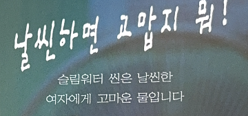

Yoon 소녀
점심시간이면 책상을 박차고 급식실로 뛰어가는 씩씩함,
밥 배와 디저트 배는 언제나 따로 마련해 두는 배포,
울다가 웃다가 하루에도 수십 번씩 바뀌는 변화무쌍한 기분.
소녀체는 도무지 어디로 튈지 모르는
명랑한 소녀들의 기분이 생생하게 담겨 있는 폰트입니다.
펜글씨의 질감과 탄력 있게 휘어진 곡선들이 알다가도 모를
그 시절의 반짝이는 마음을 고스란히 전달해준답니다.
출시년도:1999
스펙:한글 2,350자 / 영문 95자 / KS약물 985자